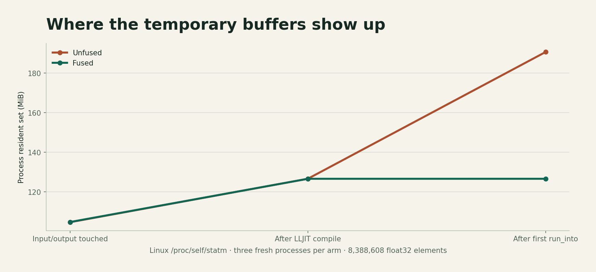
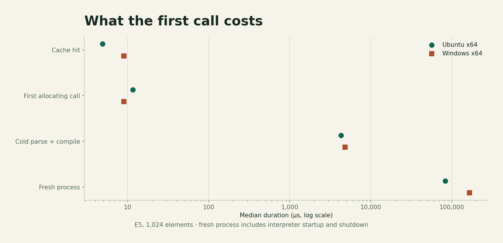

One loop instead of three
Follow the same nine values through three passes and one fused pass.
C++20 · LLVM ORC LLJIT · x86-64
Forge compiles a small Python tensor language into native CPU kernels. Follow a real expression from its graph to the AVX2 instructions that execute it.
sqrt((x + 2) * 3)
[3, 6, 9, 12, 3, 6, 9, 12, 3]
Execution replay
Change the expression or input size, compare the two loop plans, and step through the actual compiler output.
Loading native capture…
The browser replays recorded Forge executions. Run the command locally to try custom values. Lane and buffer diagrams explain the emitted schedule.
Performance explorer
The same compiler can win on a fused chain and lose on a large matrix. Change the workload, runner, and call boundary to see where the result moves.
Memory and startup
Temporary storage and first-use costs tell two different parts of the story.


Three short films
Each demo pairs real output with annotations about what the compiler and runtime did.
Follow the same nine values through three passes and one fused pass.
Change the input length and inspect the YMM body and scalar cleanup.
Compare the chain, ordered reduction, and tiled matrix product with real results.